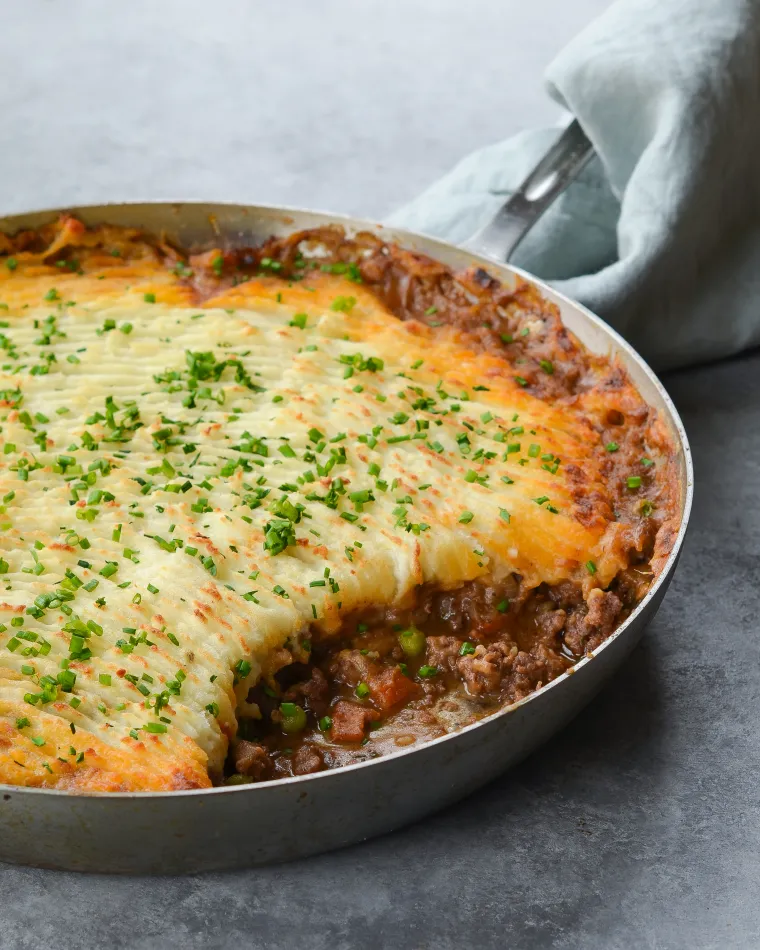

Shepherd's Pie
- Time: 1.5 hrs
- Serves: 6 people
- Allergens: Dairy
- 
Shepherds are in the business of herding sheep, which makes lamb the most obvious choice for this shepherd's pie recipe, but ground beef is a tasty addition. The combination of ground lamb and ground beef is earthy and robust, and keeps lamb’s gaminess in check. Ground lamb tends to be fatty, so this recipe uses lean ground beef to compensate. If you prefer all beef, be sure to use something with a little more fat (and call it a cottage pie, if you like). And if you prefer all lamb, you may want to skim off some of the extra fat after browning the meat.
Variations


What You Need
-
Ingredients
-
Equipment
Instructions
Step 1
In a large pot, bring a gallon of water and 2 tablespoons salt to a boil over high heat. Boil potatoes for 15-20 minutes, until soft.
Step 2
In a small saucepan, heat 6 tablespoons of the butter and milk together until butter melts. Drain potatoes well and return to pot. Using a masher, mash hot potatoes until smooth. Mix in the hot butter mixture until blended. Stir in Cheddar. Season with salt and pepper. Cover and set aside.
Step 3
Heat oven to 375 degrees. Melt remaining 2 tablespoons of butter in a large oven-safe skillet with high sides or an enameled cast-iron braiser (at least 2½-quart capacity) over medium heat. Add the onion, carrot, garlic, thyme and rosemary and cook, stirring often with a wooden spoon, until the onions are translucent and the carrots are just tender, about 10 minutes. Add the beef and the lamb and cook, breaking the meat up with a spoon, until it is no longer pink. Season mixture to taste.
Step 4
Add the tomato paste and stir, cooking until it is well combined, another 2 to 3 minutes. Sprinkle the flour over the mixture and cook for 1 minute. Add the beef stock and cook, stirring, until the liquid has thickened slightly. Stir in the parsley and remove the thyme and rosemary stems. Season to taste with salt and pepper.
Step 5
Top the meat mixture with dollops of the mashed potatoes then spread them out over the top. Transfer to the oven and, if the mixture is at the top edges of your pan, set a foil-lined baking sheet underneath pan to catch any drips. Bake the pie until the potatoes have begun to brown and the edges are bubbling. Let stand at room temperature for 15 minutes before serving.